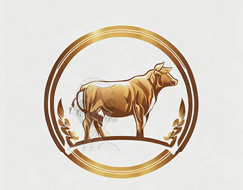
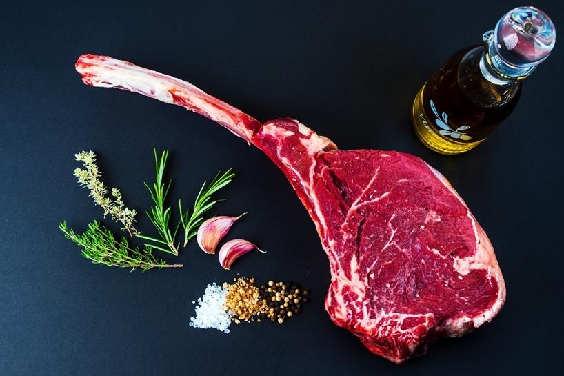

Informacion Carniceria Mi Favorita
lleva 15 años distribuyendo productos carnicos y de mejor calidad.
Carniceria Mi Favorita

Tomahawk
Este tipo de corte es uno de los mejores para el estilo de asados y se usa en varios restaurantes como la estacioa o casa escobar.
Tomahawk.
Rebay o Lomo grande
rebay o Lomo grande esta carne se especializa en el azada lo que le diferencia alas demas cortes es su sabor ya que no lleva mucha grasa pero tampoco no es que lleve nada.
Rebay.Informacion Carniceria Mi Favorita
lleva 15 años distribuyendo productos carnicos y de mejor calidad.
Carniceria Mi Favorita